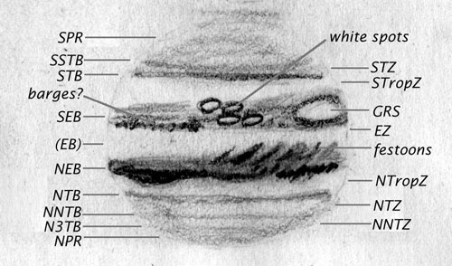

|  |
The dark and light bands are formed by clouds of different temperatures, heights, and compositions within Jupiter's atmosphere. The dark bands are called "belts", in contrast with the off-white "zones" between them. They appear brownish or reddish to most observers. Belts are named and abbreviated according to position on Jupiter: Equatorial Belt, South Temperate Band, and so on. The NEB, SEB, and the two Polar Regions are easy targets and should show up in any telescope, perhaps even high-powered binoculars if mounted on a tripod. Most of the other belts are more difficult to see, and require steady seeing and good optics. Note that even with the excellent seeing and excellent optics when this sketch was made, the EB was not visible. This is fairly typical - it's one of Jupiter's more elusive features. The highly detailed banding in the north polar region (e.g. separating the NNTB from the N3TB from the polar region) is also difficult and takes very steady skies.
The Great Red Spot (GRS) is Jupiter's most famous feature. A huge storm which has been raging as long as humans have had telescopes to look at Jupiter, it changes color and location over the years. It is fairly pale now, as the sketch shows (though it may be a little darker this year than last year, when the sketch was made). It sits within a hollow in the STB, called the "Great Red Spot Hollow", and often the hollow, where the dark band separates to make room for the GRS, is more obvious than the spot itself.
Festoons are another commonly observed feature. Blueish, in contrast with the reddish belts, they usually sweep out of the temperate bands (especially the NTP) into the EZ.
"Barges" are dark spots that migrate within a band. They aren't well understood; they may be areas of cooler cloud.
A treat in the past few years has been the collection of white ovals, especially leading and following the GRS in the STB. White ovals can be either cyclonic or anticyclonic storms. On a night of steady seeing, an amazing amount of detail can be seen, and what initially appeared to be a split in a band can turn out to be a complex of white spots of all sizes. ALPO and other observing groups track these white ovals, and issue alerts as they appear, disappear and merge, and have reported an unusual amount of activity in the last few years.
This is by no means a complete list of the features visible on Jupiter - and the features are always changing. Consider this just a basic guide for what you can see - now get out there and take a look for yourself!